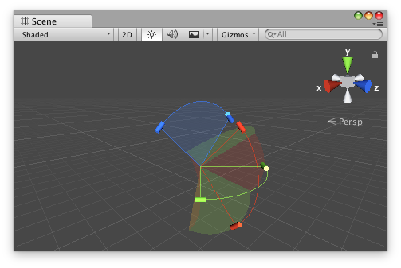

Description 描述
A class for a compound handle to edit multiaxial angular motion limits in the Scene view.

JointAngularLimitHandle in the Scene View.
The shapes rendered by the DrawHandle method assume that angular limits are applied first along the x-axis, then the y-axis, and finally the z-axis.
The following component defines angular limits for a CharacterJoint to be added at run time.
using UnityEngine;
public class JointExample : MonoBehaviour { public float xMin { get { return m_XMin; } set { m_XMin = value; } } [SerializeField] float m_XMin = -45f;
public float xMax { get { return m_XMax; } set { m_XMax = value; } } [SerializeField] float m_XMax = 45f;
public float yMax { get { return m_YMax; } set { m_YMax = value; } } [SerializeField] float m_YMax = 45f;
public float zMax { get { return m_ZMax; } set { m_ZMax = value; } } [SerializeField] float m_ZMax = 45f;
protected virtual void Start() { var joint = gameObject.AddComponent<CharacterJoint>();
var limit = joint.lowTwistLimit; limit.limit = m_XMin; joint.lowTwistLimit = limit;
limit = joint.highTwistLimit; limit.limit = m_XMax; joint.highTwistLimit = limit;
limit = joint.swing1Limit; limit.limit = m_YMax; joint.swing1Limit = limit;
limit = joint.swing2Limit; limit.limit = m_ZMax; joint.swing2Limit = limit; } }
The following Custom Editor example allows you to edit the serialized angular limits in the Scene view.
using UnityEditor; using UnityEditor.IMGUI.Controls; using UnityEngine;
[CustomEditor(typeof(JointExample)), CanEditMultipleObjects] public class JointExampleEditor : Editor { JointAngularLimitHandle m_Handle = new JointAngularLimitHandle();
// the OnSceneGUI callback uses the Scene view camera for drawing handles by default protected virtual void OnSceneGUI() { var jointExample = (JointExample)target;
// copy the target object's data to the handle m_Handle.xMin = jointExample.xMin; m_Handle.xMax = jointExample.xMax;
// CharacterJoint and ConfigurableJoint implement y- and z-axes symmetrically m_Handle.yMin = -jointExample.yMax; m_Handle.yMax = jointExample.yMax;
m_Handle.zMin = -jointExample.zMax; m_Handle.zMax = jointExample.zMax;
// set the handle matrix to match the object's position/rotation with a uniform scale Matrix4x4 handleMatrix = Matrix4x4.TRS( jointExample.transform.position, jointExample.transform.rotation, Vector3.one );
EditorGUI.BeginChangeCheck();
using (new Handles.DrawingScope(handleMatrix)) { // maintain a constant screen-space size for the handle's radius based on the origin of the handle matrix m_Handle.radius = HandleUtility.GetHandleSize(Vector3.zero);
// draw the handle EditorGUI.BeginChangeCheck(); m_Handle.DrawHandle(); if (EditorGUI.EndChangeCheck()) { // record the target object before setting new values so changes can be undone/redone Undo.RecordObject(jointExample, "Change Joint Example Properties");
// copy the handle's updated data back to the target object jointExample.xMin = m_Handle.xMin; jointExample.xMax = m_Handle.xMax;
jointExample.yMax = m_Handle.yMax == jointExample.yMax ? -m_Handle.yMin : m_Handle.yMax;
jointExample.zMax = m_Handle.zMax == jointExample.zMax ? -m_Handle.zMin : m_Handle.zMax; } } } }
Properties 属性
| angleHandleDrawFunction | The CapFunction to use when displaying the angle control handle. | ||
| angleHandleSizeFunction | The SizeFunction to specify how large the angle control handle should be. | ||
| fillAlpha | Returns or specifies the opacity to use when rendering fill shapes for the range of motion for each axis. Defaults to 0.1. | ||
| radius | Returns or specifies the radius of the arc for the handle. Defaults to 1.0. | ||
| wireframeAlpha | Returns or specifies the opacity to use for the curved lines along the outside of the arcs of motion. Defaults to 1.0. | ||
| xHandleColor | Returns or specifies the color to use for the handle limiting motion around the x-axis. Defaults to Handles.xAxisColor. | ||
| xMax | Returns or specifies the maximum angular motion about the x-axis. | ||
| xMin | Returns or specifies the minimum angular motion about the x-axis. | ||
| xMotion | Returns or specifies how angular motion is limited about the x-axis. Defaults to ConfigurableJointMotion.Limited. | ||
| xRange | Returns or specifies the range of valid values for angular motion about the x-axis. Defaults to [-180.0, 180.0]. | ||
| yHandleColor | Returns or specifies the color to use for the handle limiting motion around the y-axis. Defaults to Handles.yAxisColor. | ||
| yMax | Returns or specifies the maximum angular motion about the y-axis. | ||
| yMin | Returns or specifies the minimum angular motion about the y-axis. | ||
| yMotion | Returns or specifies how angular motion is limited about the y-axis. Defaults to ConfigurableJointMotion.Limited. | ||
| yRange | Returns or specifies the range of valid values for angular motion about the y-axis. Defaults to [-180.0, 180.0]. | ||
| zHandleColor | Returns or specifies the color to use for the handle limiting motion around the z-axis. Defaults to Handles.zAxisColor. | ||
| zMax | Returns or specifies the maximum angular motion about the z-axis. | ||
| zMin | Returns or specifies the minimum angular motion about the z-axis. | ||
| zMotion | Returns or specifies how angular motion is limited about the z-axis. Defaults to ConfigurableJointMotion.Limited. | ||
| zRange | Returns or specifies the range of valid values for angular motion about the z-axis. Defaults to [-180.0, 180.0]. |
Constructors
| JointAngularLimitHandle | Creates a new instance of the JointAngularLimitHandle class. |
Public Methods 公共方法
| DrawHandle | A function to display this instance in the current handle camera using its current configuration. |